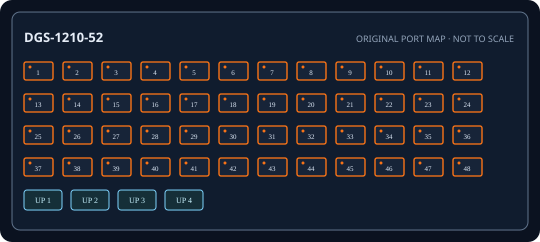

[ EXACT MODEL / SKU ]
D-Link DGS-1210-52 Rev F 52-Port Gigabit Smart Managed Switch
Exact physical interfaces and their nominal link rates are documented below. Link rates are not measured application throughput.

IDENTIFICATION: Confirm model/SKU, hardware revision, power supply and firmware on the physical unit. No measured throughput is asserted.
Model-specific specifications and compatibility
| Exact model / SKU | DGS-1210-52 Rev F 52-Port Gigabit Smart Managed Switch; manufacturer SKU DGS-1210-52. |
|---|---|
| Hardware revision | Hardware revision F (Rev F); excludes DGS-1210-52MP and other PoE suffix variants. Verify revision before firmware selection. |
| Port count and rates | 48 dedicated 10/100/1000BASE-T RJ-45 ports plus four 10/100/1000BASE-T / 1000BASE-X SFP combo ports (52 usable ports total; choose copper or SFP on each combo port, not both). Rates are per interface; aggregate full-duplex capacity is not a single-port throughput figure. |
| PoE standard and budget | None; base DGS-1210-52 model is non-PoE. |
| Uplinks | Four 1GbE SFP transceiver slots are combo with RJ-45 ports 49–52; each combo supports copper or SFP media, not both. These are 1GbE, not 10GbE SFP+. |
| Management and VLAN | Web GUI, D-Link Network Assistant and SNMP management; 802.1Q VLAN, LACP, ACL, QoS, IGMP snooping and static routing depend on revision/firmware. |
| Power input | Internal AC input 100-240 V, 50/60 Hz; non-PoE, no endpoint power budget. Consult Rev F manual for maximum draw/environmental limits. |
| Power and compatibility | Rack-mount Gigabit switch; select Rev F firmware; match qualified 1Gb SFP fiber type/reach; do not assume PoE from MP variants. |
| Measured performance | No independently measured packet-forwarding rate or latency is claimed. Test with documented firmware, packet sizes, port pairs, VLAN/QoS configuration and traffic direction if required. |
Installation and identification notes
- Record SKU, revision, PSU label, serial, firmware and port mapping before commissioning; similar model suffixes may use different power and firmware.
- Match copper cable category/length and SFP rate, wavelength, fiber type and reach to both ends of every link.
- For PoE models, confirm endpoint IEEE class negotiation and calculate demand against both per-port limits and aggregate budget.
- Preserve configuration backups and vendor documentation without publishing credentials or private network data.
Manufacturer datasheets and manuals
- D-Link Australia official DGS-1210-52 product support and downloadsOfficial D-Link model/series support or specification source; confirm revision against the unit label.
- D-Link official DGS-1210 Series datasheetOfficial D-Link model/series support or specification source; confirm revision against the unit label.
Use the exact label revision to choose current firmware, installation manuals and platform compatibility notes.